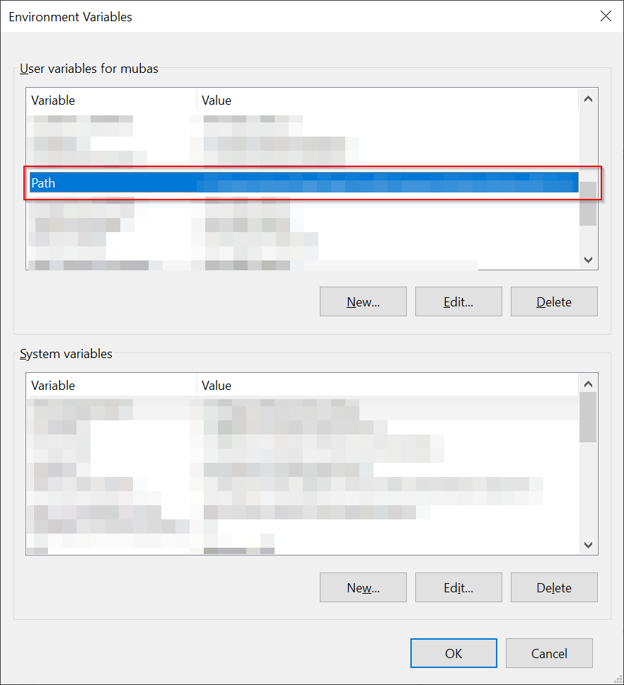

(Optional) You can add the folder path to the PATH environment variable.
Click on the Windows search button and type env
Click the Environment Variables… button
Double-click the Path variable (you can also select Path and click on the Edit button)

Add the full path of the Hugo directory (Hugo.exe). Click OK
Go to a directory where you want your blog to live. Remember that Hugo will automatically create the folder for you so you don't have to create a separate folder by yourself.
hugo new site UltimateBlog
You can also use Command Prompt instead of PowerShell
The new site UltimateBlog will be created with its own folder and files.
At this point, you can type hugo serve and navigate to localhost:1313 in your browser but you will be presented with a blank page. So let's get some themes going!
THEMES
Open up a browser and navigate to https://themes.gohugo.io. We will be selecting the Paper theme but you can choose any theme you like.
Even though there is a Download button, I prefer to go to the homepage and download it from the GitHub page (usually they are hosted on GitHub). Click on the Homepage button.
Download the ZIP file from GitHub as shown.
You can save it anywhere you like but I prefer to download inside the themes folder of the blog.
../UltimateBlog/themes
Unzip the folder. You can change the folder name from hugo-paper-master to paper only.
Inside the theme folder, you will find a file ending with a *.toml extension.